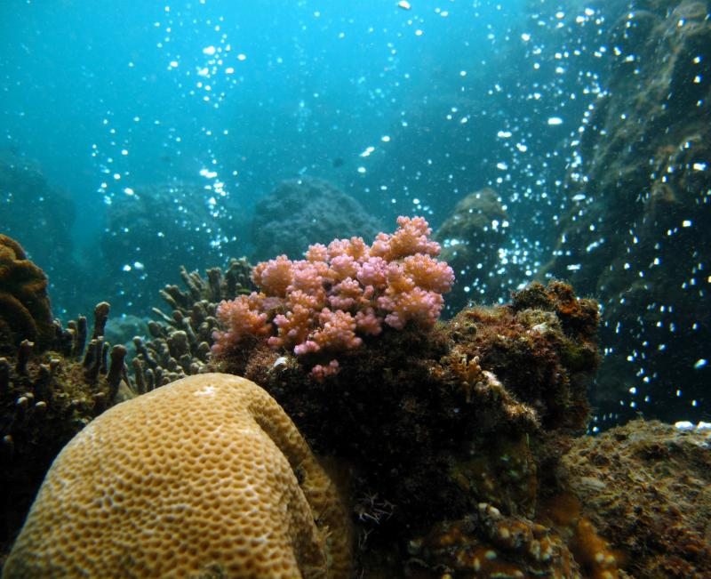
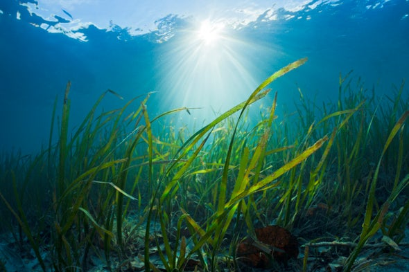
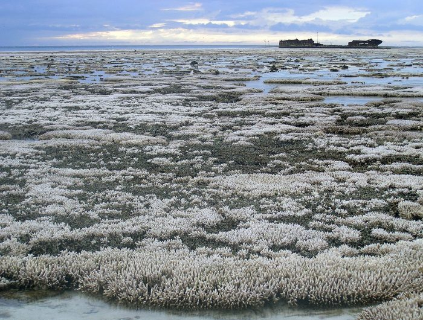

Ocean acidification is sometimes called “climate change’s equally evil twin,” and for good reason: it's a significant
and harmful consequence of excess carbon dioxide in the atmosphere that we don't see or feel because its effects are happening underwater.
The pH of the ocean fluctuates within limits as a result of natural processes, and ocean organisms are well-adapted to survive the changes
that they normally experience. Some marine species may be able to adapt to more extreme changes—but many will suffer, and there will likely be extinctions. We can't know this for sure, but during the last great acidification event 55 million years ago, there were mass extinctions in some species including deep sea invertebrates. A more acidic ocean won’t destroy all marine life in the sea, but the rise in seawater acidity of 30 percent that we have already seen is already affecting some ocean organisms.
How it impacts Ocean Life?
The pH of the ocean fluctuates within limits as a result of natural processes, and ocean organisms are well-adapted to survive the changes that they normally experience. Some marine species may be able to adapt to more extreme changes—but many will suffer, and there will likely be extinctions.
Ocean acidification can have harmful effects on marine organisms like shellfish and coral by preventing them from properly forming the hard shells they need to survive. It’s a threat both to natural ecosystems and to shellfish fisheries in the U.S. and elsewhere around the world.
Coral Reefs

Acidification may limit coral growth by corroding pre-existing coral skeletons while simultaneously slowing the growth of new ones, and the weaker reefs that result will be more vulnerable to erosion. This erosion will come not only from storm waves, but also from animals that drill into or eat coral.
Branching corals, because of their more fragile structure, struggle to live in acidified waters around natural carbon dioxide seeps, a model for a more acidic future ocean.
Seagrass

Vast underwater meadows of gently waving sea grass stand sentinel for hundreds of miles up and down the West Coast.
These blue-green fields perform a variety of important services: They protect the shoreline from erosion, clear pollutants from the water and provide habitat for all
kinds of marine animals. The study finds that sea grass ecosystems can raise pH levels by more than 0.1 unit, equivalent to about a 30% decrease in acidity.
The effect isn’t constant. It comes in waves and is influenced by temperature, daylight, ocean currents and other factors that affect water chemistry and seagrass photosynthesis rates. But the tempering influence
on acidification can be lasting, sometimes persisting for up to three weeks at a time.
How are humans causing ocean acidification?
Fossil fuel emissions are the gases that are spewed out of most cars, airplanes, power plants, and factories that are burning fossil fuels (coal, oil or gas). Since the industrial revolution, fossil fuel consumption has risen exponentially to create many climate change-related issues, including ocean acidification.

Acidification may limit coral growth by corroding pre-existing coral skeletons while simultaneously slowing the growth of new ones, and the weaker reefs that result will be more vulnerable to erosion. This erosion will come not only from storm waves, but also from animals that drill into or eat coral.
Branching corals, because of their more fragile structure, struggle to live in acidified waters around natural carbon dioxide seeps, a model for a more acidic future ocean.
Deforestation is a two-fold issue. Burning down forests is similar to burning fossil fuels, it emits a lot of carbon dioxide into the atmosphere. Forests are important because large expanses of plantlife (even in the ocean) are known to be "carbon sinks", taking in carbon dioxide for photosynthesis. Historically, carbon dioxide levels have been balanced; the CO2 being produced was in turn being absorbed. Deforestation not only creates more CO2, but it also destroys one of the very things that helps absorb it